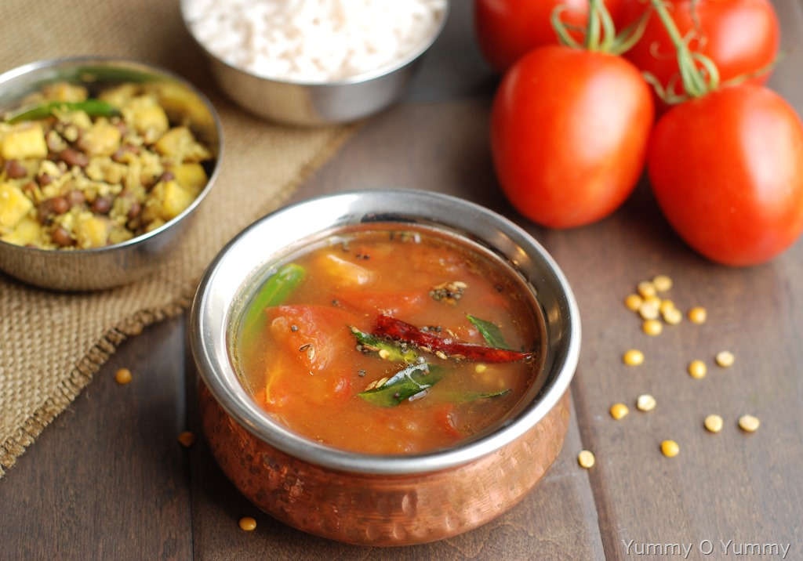

Tomato Rasam

INGREDIENTS:
- 2 Tomatoes, chopped (approx. 1 cup)
- 2 Tomatoes, finely chopped (approx. 1 cup)
- 1 teaspoon Cumin Seeds
- 10-12 Whole Black Peppercorns or 1/2 teaspoon Black Pepper Powder
- 4-5 small or 2 large cloves of Garlic
- 1 tablespoon Oil
- 1/4 teaspoon Mustard seeds
- A pinch of Asafoetida (hing)
- 5-6 Curry Leaves
- 1 Dry Red Chilli, broken into two and seeds removed (or Green Chilli)
- 3-4 tablespoons finely chopped Coriander Leaves (*)
- 1/2 teaspoon Red Chili Powder
- 1¼ cups Water
- Salt to taste
METHOD
- Chop 2-tomatoes into big pieces and 2-tomatoes into small pieces.
- Add cumin seeds, black peppercorns and garlic cloves in the small jar of a grinder.
- Grind them into a medium coarse paste. Transfer it to a small bowl. You can also use mortar and pestle to make the paste instead of using mixer grinder.
- Add chopped tomatoes (2-tomatoes chopped into big pieces) in the same jar and grind until smooth puree.
- Heat oil in a pan over medium flame. Add mustard seeds; when they begin to crackle, add asafoetida, dry red chilli and curry leaves.
- Add cumin-black-peeper-garlic paste (prepared in step-3).
- Sauté it for a minute.
- Add tomato puree. Mix well and cook for 3-4 minutes.
- Add 2 tablespoons chopped coriander leaves.
- Add red chilli powder and salt. Mix well and cook for a minute. Add chopped tomatoes and cook for 1-2 minutes.
- Add 1¼ cups water.
- Mix and bring it to boil over medium flame. When it starts to boil, reduce flame to low and cook for around 4-5 minutes until mixture turns frothy.
- Add finely chopped coriander leaves.
- Turn off the flame and transfer it to a bowl. Serve with steamed rice.